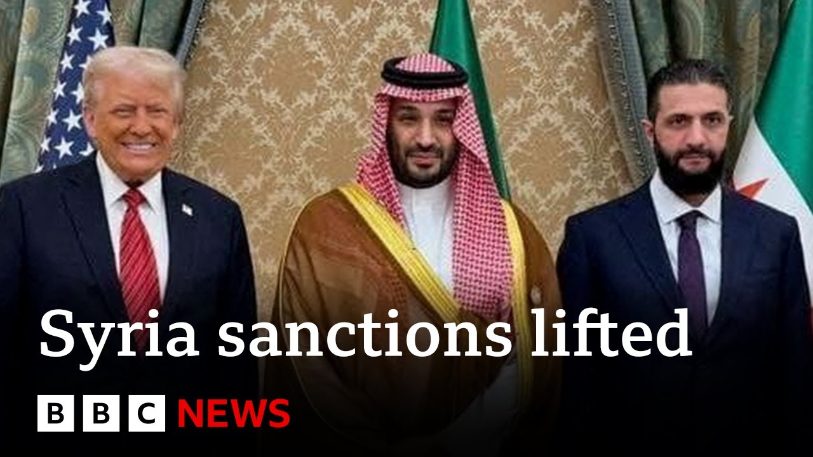

【唐纳德·特朗普解除对叙利亚制裁 | BBC新闻】
Summary: Syrians celebrate in Damascus as Trump lifts US sanctions, with praise for Saudi Arabia's Crown Prince who advocated ending sanctions; Trump announces the move in Riyadh during a Gulf tour, signing a $142 billion arms deal and focusing on Saudi investment in US firms to create jobs.
摘要： 叙利亚人在大马士革庆祝特朗普解除美国制裁，赞扬沙特王储推动结束制裁；特朗普在利雅得宣布这一决定，签署1420亿美元军售协议，并聚焦沙特对美投资以创造就业。

⏱️ Estimated Reading Time: 7 min
Well, Syrians have taken to the streets of the capital of Damascus to celebrate Donald Trump's decision to lift longrunning US economic sanctions.
叙利亚人走上大马士革街头，庆祝唐纳德·特朗普解除美国长期经济制裁的决定。
Residents in Damascus praised Saudi Arabia's Crown Prince Muhammad bin Salman, who advocated ending sanctions dating back to the rule of the deposed Assad government.
大马士革居民称赞沙特王储穆罕默德·本·萨勒曼，他主张解除始于被推翻的阿萨德政府时期的制裁。
Mr. Trump made the announcement in the Saudi capital, Riyad, where he started his tour of Gulf Arab states.
特朗普在沙特首都利雅得宣布这一消息，开启他对海湾阿拉伯国家的访问。
He also signed a record $142 billion arms deal with the crown prince.
他还与王储签署了创纪录的1420亿美元军售协议。
Our North America editor Sarah Smith is in Riyad.
本台北美编辑莎拉·史密斯在利雅得报道。
This was an extra special VV VIP welcome.
这是一次超规格的VVVIP级欢迎。
And Donald Trump had even chosen a tie to match the lavender colored carpet that greeted him as he arrived in Saudi Arabia.
唐纳德·特朗普甚至选择了与迎接他的薰衣草色地毯相配的领带。
The Crown Prince Muhammad bin Salman knows how to flatter a man who'd love to have these royal trappings at his own disposal.
王储穆罕默德·本·萨勒曼深谙如何取悦一个渴望拥有这些王室排场的人。
An honor guard of Arabian horses accompanied the presidential limo to the royal palace.
阿拉伯马仪仗队护送总统座驾前往皇宫。
Donald Trump brought along his current best buddy, Elon Musk, and a selection of other top American business leaders because business is what this trip's all about.
唐纳德·特朗普带上了现任挚友埃隆·马斯克及其他美国商界领袖，因为商业是此行的核心。
Securing hundreds of billions of dollars of Saudi investment in American firms.
确保沙特对美国企业数千亿美元的投资。
As you know, we have the biggest business leaders uh in the world here.
如你所知，我们这里有全球顶尖的商业领袖。
and they're going to walk away with a lot of checks for a lot of things that you're going to provide.
他们将带着你们提供的诸多项目的巨额支票离开。
And in the United States, it's probably 2 million jobs that we're talking about.
这将在美国创造约200万个就业岗位。
Donald Trump came here to sign big economic deals he hopes will deliver jobs and prosperity to the US.
唐纳德·特朗普此行签署重大经济协议，希望为美国带来就业与繁荣。
Inevitably, the wars in Gaza and Ukraine will be discussed.
加沙和乌克兰战争议题不可避免。
He can't avoid global politics, but mostly he wants to be seen as a dealmaker who's delivering for America, not bombing.
他无法回避全球政治，但更希望被视为给美国带来实惠而非炸弹的交易促成者。
He said it is these kind of commercial deals that will create a peaceful future for the Middle East.
他表示此类商业协议将为中东创造和平未来。
As he announced that the US is restoring normal relations with Syria for the first time in over 10 years, I will be ordering the cessation of sanctions against Syria in order to give them a chance at greatness.
他宣布美国十余年来首次与叙利亚恢复正常关系，并表示将下令解除对叙制裁以助其重振。
Overshadowing his trip is the gift of this $400 million plane from the state of Qatar, where he's visiting tomorrow.
卡塔尔赠送的4亿美元飞机成为此行焦点，他明日将访问该国。
that's provoked fierce criticism from opponents and friends.
此举引发反对者和盟友的激烈批评。
He wants to refit the luxurious interior to use it as Air Force One for presidential travel, insisting it would be stupid to look a gift plane in the mouth.
他计划改装其豪华内饰作为总统专机"空军一号"，坚称对赠机挑剔是愚蠢的。
By contrast, it is a golf cart that's driving him to dinner with the man he calls his great friend, Muhammad bin Salman.
而送他去与挚友穆罕默德·本·萨勒曼共进晚餐的却是一辆高尔夫球车。
Donald Trump clearly believes that it is by doing deals with friends like these he can try to reshape the Middle East.
唐纳德·特朗普显然相信，正是通过与这些朋友达成交易，他才能重塑中东格局。
Sarah Smith, BBC News, Riyad.
BBC新闻，莎拉·史密斯于利雅得报道。
Well, Efrat Sofa is chair of the board of advisers at the Ezri Center for Iran and Gulf States Research at Hifer University.
埃弗拉特·索法是海法大学Ezri伊朗与海湾国家研究中心的顾问委员会主席。
She is also a Gulf nations specialist and talk me through this trip President Trump is making.
作为海湾国家专家，她为我们解读特朗普总统此行。
what we see um in Saudi Arabia and in the wider um Trump trip to the Gulf is indeed uh President Trump's emphasis on the um concept of security and prosperity going hand in hand.
我们看到特朗普在沙特及海湾之行中确实强调安全与繁荣并重的理念。
We are seeing this uh with the $600 billion trade deal including the $142 billion um arms deal with Saudi Arabia.
这体现在与沙特达成的6000亿美元贸易协议（含1420亿美元军售）中。
And at the same time, the UAE um h the UAE has uh declared that there will be a $1.4 $4 trillion deal um with the US both for defense and interestingly an AI um deal where the UAE wants to become an AI leader.
同时阿联酋宣布将与美国达成1.4万亿美元协议，涉及国防及人工智能领域——后者尤为有趣，因阿联酋志在成为AI领导者。
So this is the art of the deal personified with statecraft at the same time but also also as well big businesses is is really gaining.
这既是治国之道的交易艺术体现，也是大企业的真正获利。
Elon Musk's Starink is getting some really lovely deals.
埃隆·马斯克的星链斩获优厚协议。
He was there at the Riyad investment conference as was the boss of Nvidia.
他与英伟达CEO均出席利雅得投资会议。
Uh they're doing great deals with Humane of Saudi Arabia of supplying all the chips.
他们与沙特HumanE公司就芯片供应达成重要协议。
It looks like a win-win, doesn't it?
这看似双赢，不是吗？
This is the way that the Trump administration is portraying it.
这正是特朗普政府的表述方式。
And um I think it can be interpreted as a win-win.
我认为可解读为双赢。
And it's it very much mirrors the policies of the Gulf states where prosperity and trade are seen as a diplomatic tool.
这也高度契合海湾国家将繁荣与贸易视为外交工具的政策。
At the same time, we cannot also ignore the um context where um the USA is also negotiating with Iran at the same time.
同时不能忽视美国正与伊朗谈判的背景。
And if we look at Trump's speech yesterday, he did um highlight the difference between the constructive vision of Saudi leaders, for example, um versus the collapse and suffering um headed and caused by the Iranian regime.
从特朗普昨日演讲可见，他刻意对比沙特领导人的建设性愿景与伊朗政权导致的崩溃与苦难。
So, it's interesting messaging also to the other states that the US is um negotiating with at the moment.
这也是向当前美国谈判对象发出的有趣信号。